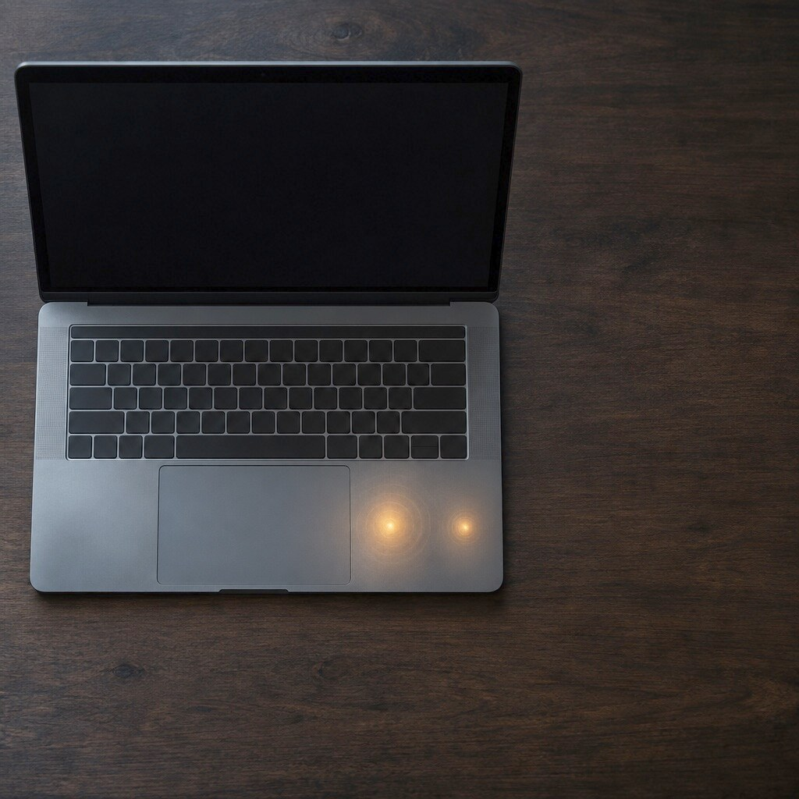
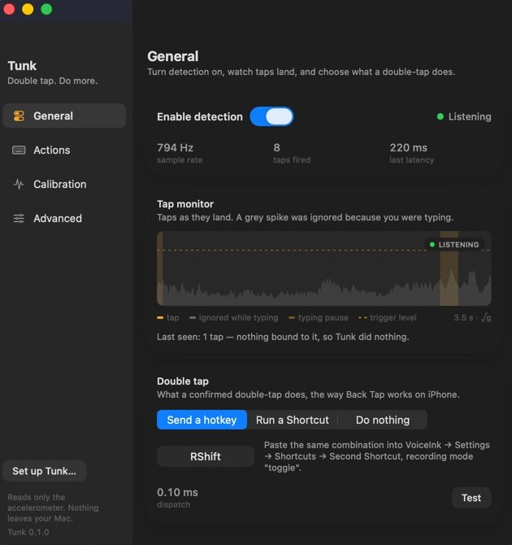
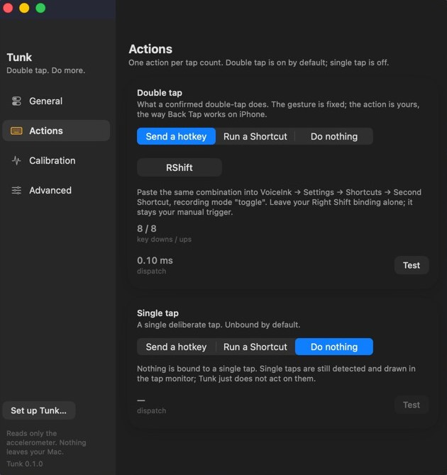
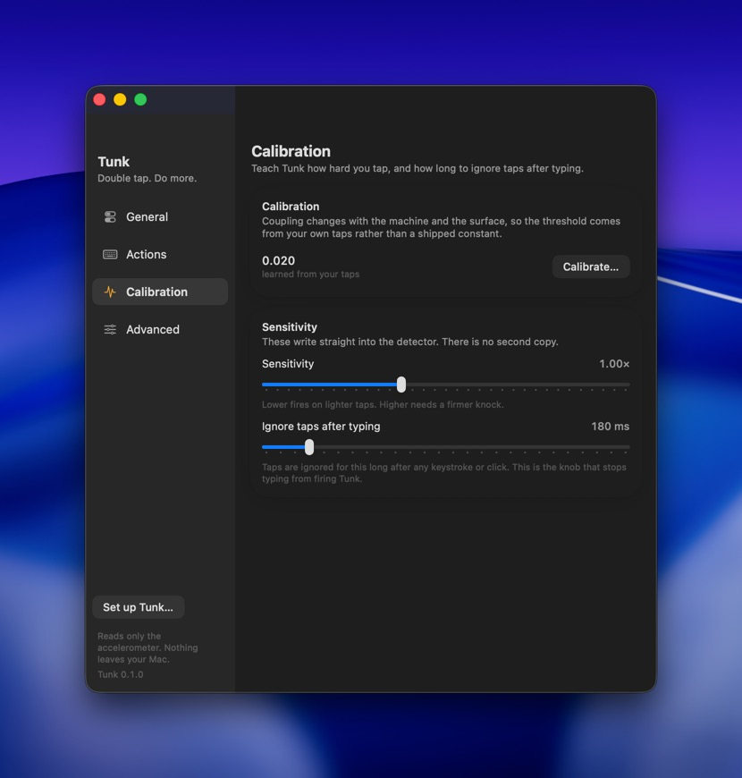

macOS menubar utility
Knock twice on your MacBook.
Tunk feels the knock through the accelerometer already inside the machine, at 796 Hz, and fires the shortcut you chose. It is Back Tap on an iPhone, applied to a laptop. It reads that one sensor and nothing else.
4.6 MB · Apple silicon · macOS 13 or later. Read the note below the steps before you open it.

Click the photograph.
Three screens, no manual.
Turn detection on and watch taps land. Choose what a double tap does. Teach it how hard you knock. Everything an experiment rather than a feature lives under Advanced, switched off.



Measured, not claimed.
On a hard desk and on a soft surface the detector finds 20 of 20 held-out double-taps. On a lap it finds 16, against a bar of 98 %, so the harness returns FAIL. The typing metric, the one that decides whether this is worth running, has never been graded out of sample and reads INCOMPLETE. Both numbers are here because hiding the second would make the first worthless.
Running in four steps.
- Open the DMG and drag Tunk onto Applications.
- Open it from Applications. Tunk lives at the right-hand end of the menu bar and has no Dock icon.
- Grant two permissions. A window opens on first launch: Input Monitoring to read the accelerometer, Accessibility to press the key. Each row opens the right pane for you, and the window notices the moment you come back.
- Double-tap the case. Palm rest, lid, or the deck beside the trackpad. The ring lights up for each knock it hears.
Tunk 0.1.0
Download the DMGThis build is signed ad hoc, not with a Developer ID. On a Mac that is not the one it was built on, macOS will refuse to open it and say it cannot verify the developer. Opening it from the right-click menu is the usual way past that, and a notarised build is the real fix. It is also why macOS asks for both permissions again after every update: a grant belongs to one signature, and each build makes a new one.